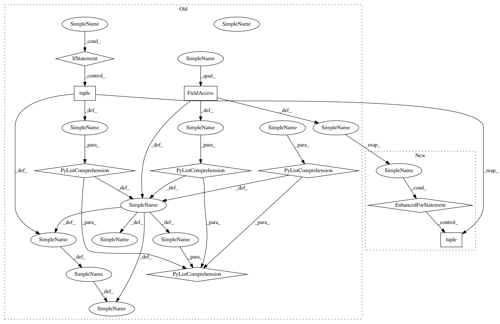

b212f344456ae4c63d2e5447fd1fe6cfef26ca8e,ml-agents-envs/mlagents_envs/rpc_utils.py,,behavior_spec_from_proto,#,27
Before Change
:param agent_info: protobuf object.
:return: BehaviorSpec object.
observation_shape = [tuple(obs.shape) for obs in agent_info.observations]
dim_props = [
tuple(DimensionProperty(dim) for dim in obs.dimension_properties)
for obs in agent_info.observations
]
sensor_types = [SensorType(obs.sensor_type) for obs in agent_info.observations]
sensor_specs = [
SensorSpec(obs_shape, dim_p, sensor_type)
for obs_shape, dim_p, sensor_type in zip(
observation_shape, dim_props, sensor_types
)
]
// proto from communicator < v1.3 does not set action spec, use deprecated fields instead
if (
brain_param_proto.action_spec.num_continuous_actions == 0
and brain_param_proto.action_spec.num_discrete_actions == 0
After Change
:return: BehaviorSpec object.
sensor_specs = []
for obs in agent_info.observations:
sensor_specs.append(
SensorSpec(
tuple(obs.shape),
tuple(DimensionProperty(dim) for dim in obs.dimension_properties),
SensorType(obs.sensor_type),
)
)
// proto from communicator < v1.3 does not set action spec, use deprecated fields instead
if (
brain_param_proto.action_spec.num_continuous_actions == 0
and brain_param_proto.action_spec.num_discrete_actions == 0
):
In pattern: SUPERPATTERN
Frequency: 4
Non-data size: 9
Instances
Project Name: Unity-Technologies/ml-agents
Commit Name: b212f344456ae4c63d2e5447fd1fe6cfef26ca8e
Time: 2021-01-06
Author: awjuliani@gmail.com
File Name: ml-agents-envs/mlagents_envs/rpc_utils.py
Class Name:
Method Name: behavior_spec_from_proto
Project Name: Unity-Technologies/ml-agents
Commit Name: 405484e8d6af506811d30382b558dc5bdf1bef51
Time: 2021-01-26
Author: vincentpierre@unity3d.com
File Name: ml-agents-envs/mlagents_envs/rpc_utils.py
Class Name:
Method Name: behavior_spec_from_proto